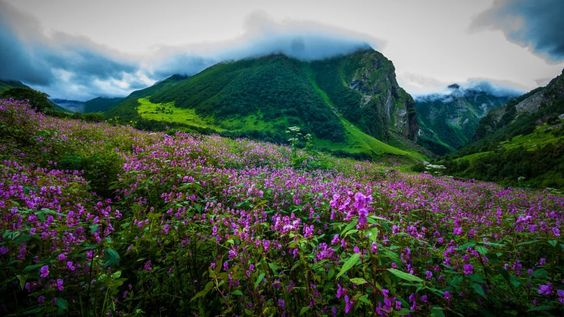

Uttarakhand
₹40,000
Event Type
Trekking
Best Time
Nov-April
How To Reach
By Air
Jolly Grant Airport is the nearest airport to Dehradun and is easily accessible, it is just 25 km
away from the city. Daily flights from New Delhi are available to this airport. You will have to
take a private cab from the airport to Lohajung or you can take a bus to Lohajung from the bus stand
which starts early in the morning.
By Rail
Dehradun railway station. Overnight trains that hail from Delhi are Nandadevi Express and Dehradun
Express. People often prefer railways over airways because with trains you get to see the landscape
in its full glory, it is also cheaper and you will definitely enjoy your way till Dehradun. You will
have to take a private cab from the airport to Lohajung or you can take a bus to Lohajung from the
bus stand which starts early in the morning.
By Road
Regular bus service is available from Delhi ISBT Kashmere Gate which plies government buses that are
safe and you can rely on them more than the private buses. You will have to take a private cab from
the airport to Lohajung or you can take a bus to Lohajung from the bus stand which starts early in
the morning.
OverView
Uttarakhand
is one of the Top Treks in India and
it is
the most popular trek in Uttrakhand,.
The stellar beauty of five alpine lakes lapped in the dreamscape of Kashmir - can you think of a
more beautiful combination? Kashmir Great Lakes is a name that sets every trekker's heart racing -
and for good reason! The Great Lakes of Kashmir Trek is easily the most beautiful, picture-perfect,
postcard-worthy trek we run. The trail of this Himalayan Trekking leads you through five alpine
lakes, each as beautiful as the other. The lakes follow one after the other every day, making each
day equally exciting. Remember the rush and excitement of a pass day/summit day? Well, multiply all
of that by 5, and you have the Kashmir Great Lakes Trekking - each day a beautiful, new lake to look
forward to. What's more interesting is that you get to see these lakes just as they are being fed by
the snow-clad mountains. If you are lucky enough, you may even chance upon an occasional iceberg
floating across the pristine blues and greens of the lake. The beautiful, albeit distorted
reflections of the surrounding mountains on the surface of the lake, is also something to look
forward to. Given the arduous, undulating trail,Uttarakhand Trekking demands commendable
fitness
Best Time To Visit
The best time to scale the Brahma tal Trek is in the winter months of January and February. This is
because, during winters, we can envisage heavy snowfall. You will get the privilege of walking on a
blanket of snow. The quantity of snow tempts the trekkers from all over to take up the challenge.
The weather in the Himalayas is quite unpredictable. Brahma tal, being a winter-friendly trek, the
weather is mostly sunny during the daytime while it tends to get very cold during the night. The
temperature during the daytime is around 3 to 10 degrees centigrade. The nights are very freezing
with temperatures falling to -5 degrees centigrade. However, during March and April, you will be
elated to see the diverse and vivid hues of rhododendrons blooming across the trail. You can witness
the red, white and pink rhododendron which will be a treat to the eye
Temprature at Kashmir
The temperature ranges from 10 to 28 degrees Celsius during the daytime and 3 to 4 degrees Celsius
at night